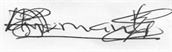

COLLEGE OF ENGINEERING
KWAME NKRUMAH UNIVERSITY OF SCIENCE AND TECHNOLOGY
Office of the Provost
University Post Office
Kumasi-Ghana West Africa
Direct Line: 233-3220-60240
Tel/Fax: 233-3220-60317
Email:provost.coe@knust.edu.gh
Our Ref:CoE-VACT/{{year}}/
{{full_date | date:'fullDate'}}
Dear Sir/Madam,
VACATION TRAINING FOR {{year-1}}/{{year}} ACADEMIC YEAR
LETTER OF INTRODUCTION
The College of Engineering of the Kwame Nkrumah University of Science and Technology seeks to become a
global college of engineering focused on national industrial development. This means among other things
that the need for students to have exposure to industrial practice early in their engineering education
is one of the important pillars of their training. Therefore as part of our requirements for graduation
in the B.Sc Engineering Degree programmes, students must complete a minimum of 8-week industrial attachment
programme with a local or an overseas industrial establishment between May and August.
The purpose of the vacation training among other things is to enable students to translate the theories
they have learnt in the classroom into tasks in a real work environment.
The purpose of this letter is first of all to thank you for the support you have been offering us in
previous years in the training of our young engineers and also the monitoring and evaluation of our
students during the vacation training period.
The College of Engineering, KNUST, would like to seek for vacation training placement in your company
for {{ student[0].surname | titlecase}} {{ student[0].other_names |
titlecase}} ,a 3rd Year
student from the {{ student[0].department | titlecase}} Engineering Department.
We would be most grateful, if you could offer him/her a vacation training position in your company.
Thank you in anticipation of your cooperation.
Yours sincerely,
Ing. Kwame Agyekum
(College Internship Coordinator)

Ing. Prof. Mark Adom-Asamoah
(Provost, College of Engineering)